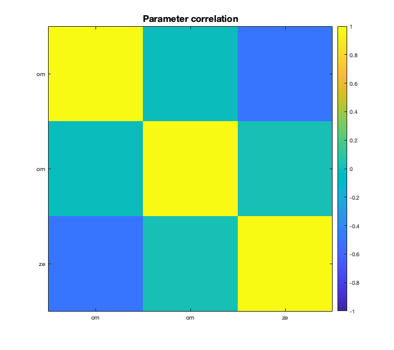

Contents
Simulate beliefs and responses using the tapas hgf binary perceptual model
addpath('../tapas/HGF')
k2 = 2.5;
w2 = -4;
w3 = -6;
x3_init = 0;
x2_init = 0;
u_init = 0;
inputs = generate_inputs(k2,w2,w3,x3_init,x2_init,u_init);
u = inputs(:,1);
x2 = inputs(:,2);
x3 = inputs(:,3);
sim = tapas_simModel(u,...
'tapas_hgf_binary',...
[NaN 0 1 NaN 0 1 NaN 0 0 0 k2 NaN -w2 w3],...
'tapas_unitsq_sgm',...
5,...
12345);
Ignored trials: none
Try to recover these parameters using tapas fitModel, estimating mu3, kappa2, theta
est = tapas_fitModel(sim.y,...
u,...
'tapas_hgf_binary_config',...
'tapas_unitsq_sgm_config',...
'tapas_quasinewton_optim_config')
tapas_fit_plotCorr(est)
Ignored trials: none
Irregular trials: none
Optimizing...
Calculating the log-model evidence (LME)...
Results:
Parameter estimates for the perceptual model:
mu_0: [NaN 0 1]
sa_0: [NaN 0.1000 1]
rho: [NaN 0 0]
ka: [1 1]
om: [NaN -8.7199 -5.9737]
Parameter estimates for the observation model:
ze: 6.8929
Model quality:
LME (more is better): -74.1485
AIC (less is better): 144.6663
BIC (less is better): 152.5117
AIC and BIC are approximations to -2*LME = 148.297.
est =
struct with fields:
y: [101×1 double]
u: [101×1 double]
ign: []
irr: [0×1 double]
c_prc: [1×1 struct]
c_obs: [1×1 struct]
c_opt: [1×1 struct]
optim: [1×1 struct]
p_prc: [1×1 struct]
p_obs: [1×1 struct]
traj: [1×1 struct]
